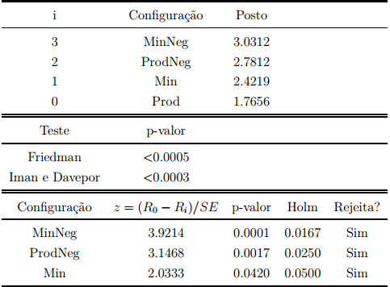

Operadores Fuzzy e Negação

Teste de Friedman e Holm
O Produto obteve melhor ranking em Acurácia e Número de regras. Substancialmente superior na minimização
do número de regras.
Acurácias
Número de regras
